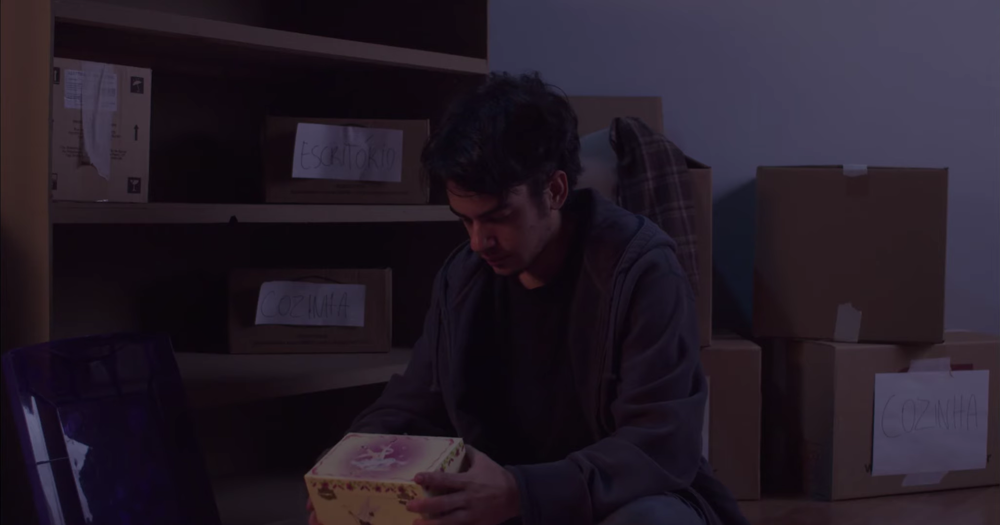
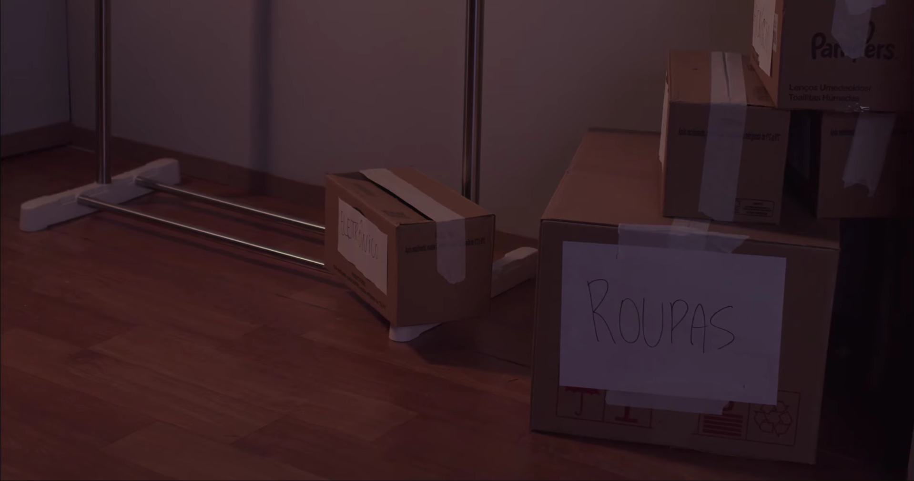
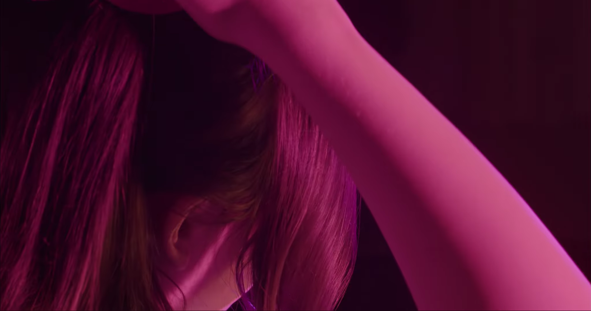
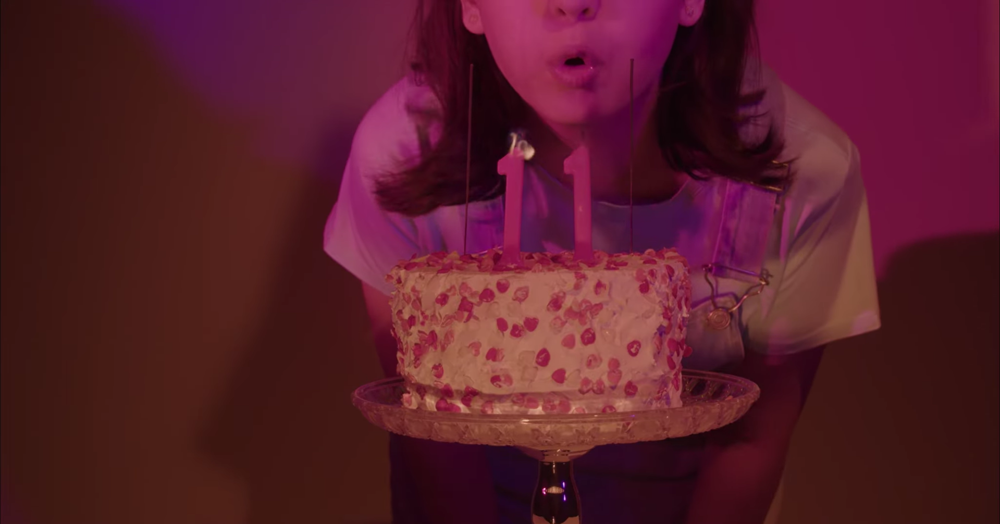

Direção de foto · 2024
Transbordando
Projeto de direção de fotografia. Curta de formação do 4° semestre do curso de cinema da FAAP
DF

- Categoria
- Fotografia
- Função
- Direção de foto
- Ano
- 2024
- Formato
- A definir
Sobre o
projeto
Gravado em outubro de 2024, este curta conta a história de Matheus, interpretadu pelo atore Aren Gallo, que procura se reconectar com a sua criança inteiror, Mari, interpretada por Maria Eduarda Agois.
Link do Teaser do Curta ↗Frames & bastidores



Ficha técnica
- Direção de foto
- Julia Figueirôa
- Direção
- Jasper
- Instituição
- FAAP